Unidade 1: computação
Nesta unidade começaremos nosso estudo sobre computação e, mais especificamente, sobre ciência da computação. Nosso objetivo é fazer com que você entenda os grandes fundamentos da computação, incluindo:
- O que é ciência da computação
- Representação de dados no computador
- Algoritmos
- Pensamento computacional
- Abstração
O conteúdo desta unidade está dividido em 6 partes, sendo a primeira parte uma visão geral do que estudaremos. Em cada parte você encontrará o vídeo da aula, o texto correspondente e demais recursos. Utilize o sumário abaixo para navegar no conteúdo da unidade.
Sumário:
- PARTE 0: visão geral da unidade
- PARTE 1: o que é ciência da computação?
- PARTE 2: representação de dados
- Vídeo da parte 2
- Por que é importante entender a representação de dados?
- Representação de números
- Representação de textos
- Representação de cores
- Representação de imagens
- Representação de áudio
- Representação de vídeo
- Diferenciação entre padrões binários
- Anexos: conteúdo adicional sobre representação de números
- PARTE 3: algoritmos
- PARTE 4: pensamento computacional
- PARTE 5: abstração
- Diário de Aprendizagem
PARTE 0: visão geral da unidade
Esta unidade compreende o estudo dos fundamentos da computação e dará a base a partir da qual você aprenderá os pilares da computação e formará uma fundação para as próximas unidades. Se você ainda não terminou as atividades da Unidade 0: introdução, é importante que você não prossiga: estude primeiro a Unidade 0 (incluindo fazer o diário de aprendizagem) e, depois, continue aqui na Unidade 1.
Nesta Unidade 1 falaremos sobre os grandes fundamentos da computação, incluindo discussões sobre: a) o que é ciência da computação; b) representação de dados em um computador; c) algoritmos; d) pensamento computacional; e, por último, e) abstração. A abstração, na verdade, é um dos componentes do pensamento computacional mas, de tão importante, merece uma discussão detalhada em separado. Este é o conteúdo desta unidade:

PARTE 1: o que é ciência da computação?
Vídeo da parte 1: o que é ciência da computação?
Essência e conceito da ciência da computação
Existe uma certa confusão sobre o que é realmente a ciência da computação. Muitas pessoas acreditam que computação é praticamente um sinônimo de programação. Esse entendimento não é correto: a programação nos permite expressar idéias e resolver problemas através de computadores mas a essência da ciência da computação não depende de programação.
Ciência da computação NÃO É sobre programação.
Outras pessoas acreditam que ciência da computação é o trabalho com computadores. Mas essa visão também não é correta: os computadores são meras ferramentas de trabalho, são ferramentas fantásticas que programamos para nos ajudar a resolver problemas de forma mais rápida, mas a essência da ciência da computação também não depende de computadores (na verdade, alguns dos mais antigos e fundamentais desenvolvimentos teóricos da computação ocorreu entre 1920 e 1940, muitos anos antes do desenvolvimento dos primeiros computadores).
Ciência da computação NÃO DEPENDE de computadores.
Alguns pensam que ciência da computação é o estudo dos usos e aplicações dos computadores e softwares. Essa visão também não é correta: saber usar um computador ou um software específico não é a essência da ciência da computação, da mesma forma que saber dirigir um carro não é a essência da engenharia automotiva.
Ciência da computação NÃO É sobre o uso de computadores e softwares.
Computadores, programação e o uso e a aplicação de softwares fazem parte do “mundo” da computação mas não formam, isoladamente ou em conjunto, a essência da ciência da computação.
Na realidade a ciência da computação é sobre resolver problemas de um certo modo, de uma certa maneira. Mas como formalizar então qual é a essência da ciência da computação? Talvez uma das melhores explicações sobre a essência da ciência da computação foi dada por Hal Abelson, um dos autores do soberbo livro Structure and Interpretation of Computer Programs (SICP: HTML original; SICP: HTML novo; SICP: PDF; SICP: Texinfo; SICP: PDF da versão JS; SICP: Comparison Edition), em uma aula para funcionários da Hewlett-Packard, em julho de 1986. Abelson explica o que é a ciência da computação do seguinte modo:
[A ciência da computação] Também não se trata muito de computadores. E não se trata de computadores no mesmo sentido em que a física não se trata realmente de aceleradores de partículas, e a biologia não se trata realmente de microscópios e placas de Petri. E não se trata de computadores no mesmo sentido em que a geometria não se trata realmente do uso de instrumentos topográficos.
Na verdade, há muitos pontos em comum entre a ciência da computação e a geometria. A geometria, antes de mais nada, é outra disciplina com um péssimo nome. O nome vem de Gaia, que significa Terra, e metron, que significa medir. Geometria, originalmente, significava medir a Terra ou fazer levantamentos. E a razão para isso foi que, há milhares de anos, o sacerdócio egípcio desenvolveu os rudimentos da geometria para descobrir como restaurar os limites dos campos que foram destruídos pelas cheias anuais do Nilo. E, para os egípcios que fizeram isso, a geometria era realmente o uso de instrumentos topográficos. Agora, a razão pela qual pensamos que a ciência da computação trata de computadores é praticamente a mesma razão pela qual os egípcios pensavam que a geometria tratava de instrumentos de levantamento. E isto é, quando alguma área está apenas começando e você não a entende muito bem, é muito fácil confundir a essência do que você está fazendo com as ferramentas que você usa. E, de fato, numa escala absoluta de coisas, provavemente sabemos menos sobre a essência da ciência da computação do que os antigos egípcios realmente sabiam sobre geometria.
Bem, o que eu quero dizer com essência da ciência da computação? O que quero dizer com essência da geometria? Veja, é certamente verdade que esses egípcios usavam instrumentos de topografia, mas quando olhamos para eles depois de alguns milhares de anos, dizemos, caramba!, o que eles estavam fazendo, a coisa importante que estavam fazendo [a essência da geometria], era começar a formalizar noções sobre espaço e tempo, para iniciar uma maneira de falar formalmente sobre verdades matemáticas. Isso levou ao método axiomático. Isso levou a que toda matemática moderna descobrisse uma maneira de falar precisamente sobre o chamado conhecimento declarativo, sobre o que é verdadeiro.
Bem, da mesma forma, acho que no futuro as pessoas olharão para trás e dirão, sim, aqueles primitivos do século 20 estavam brincando com esses dispositivos chamados computadores mas, na verdade, o que eles estavam fazendo era começando a aprender como formalizar intuições sobre processos, sobre como fazer as coisas, começando a desenvolver uma forma de falar precisamente sobre o conhecimento de como fazer alguma coisa [conhecimento imperativo], em oposição à geometria que fala sobre o que é verdadeiro [conhecimento declarativo].
Quando achamos que ciência da computação é sobre programação e computadores, estamos confundindo a essência da computação com as ferramentas que são utilizadas (os computadores). Quando uma nova área de estudo está sendo desenvolvida é fácil confundir a essência com as ferramentas, e é essa confusão que nos faz achar que ciência da computação é sobre computadores (a ciência da computação é muito nova). Na verdade a essência da ciência da computação é formalizar “receitas de bolo” (chamadas de algoritmos) que nos permitem saber como fazer as coisas, sobre como resolver problemas. Em resumo, podemos dizer que:
CIÊNCIA DA COMPUTAÇÃO É A CIÊNCIA QUE ESTUDA, CRIA E IMPLEMENTA ALGORITMOS PARA SOLUCIONAR PROBLEMAS.
Nós estudaremos em detalhes o que é um algoritmo na Parte 3 desta unidade. Por ora basta entender que um algoritmo é como se fosse uma “receita de bolo” que seguimos para resolver um determinado problema, para realizar um determinado processo. A palavra algoritmo (bem como a palavra algarismo) foi criada a partir do nome de um matemático persa que viveu entre os séculos VIII e IX (c. 780 - c. 850) chamado de Abū Abd Allāh Muḥammad ibn Mūsā al-Khwārizmī (Pai de Abdullah, Mohammed, filho de Moisés, nativo de Khwarizm). Al-Khwārizmī foi um gênio matemático à época, e seus trabalhos introduziram os numerais hindu-arábicos e os conceitos de álgebra na matemática ocidental. Alguns de seus trabalhos descreviam um modo sistemático de obter soluções para equações quadráticas, ou seja, uma “receita” a ser seguida. A foto abaixo é uma estátua em sua homenagem, na cidade de Khiva, atual Uzbequistão:

Modelo geral da computação
Quando falamos que a ciência da computação resolve problemas, uma pergunta óbvia é: como a computação resolve os problemas? Na verdade existe um “modelo geral” através do qual a computação resolve problemas. Esse modelo de computação pode ser ilustrado na figura abaixo:

A partir de um determinado problema, fazemos o input (entrada) do problema no computador. Esse problema será tratado por um algoritmo (a “receita” para a solução do problema) e o computador fará o output (saída) da solução. Esse modelo é muito importante: toda vez que você pretende resolver um problema de forma computacional, você deve pensar e se fazer as seguintes perguntas?
- Qual é o input (entrada), ou seja, qual é o problema que eu quero resolver?
- Qual é o output (saída), ou seja, qual é a solução esperada do problema?
- E, por fim, que algoritmo me permite processar a entrada (o problema) e obter a saída correta (a solução)?
Atenção: não subestime a segunda pergunta, a solução esperada para o problema. Muitas pessoas tendem a se focar somente no problema e não têm uma visão clara de qual deve ser a solução correta, a solução esperada para o problema. Se você não tem clareza em qual deveria ser a solução correta, é mais difícil encontrar um algoritmo. Como você vai achar um algoritmo para transformar o input no output, se você não sabe em que output quer chegar?
Conhecimento declarativo e imperativo
Vamos voltar agora ao texto do Hal Abelson (acima). Note que ele nos diz que a ciência da computação diz respeito a saber como fazer as coisas, em oposição à saber o que é alguma coisa. Aqui existe uma distinção importante entre dois “tipos” diferentes de conhecimento: o conhecimento declarativo e o conhecimento imperativo. Para a ciência da computação, o conhecimento imperativo é fundamental. Vamos entender melhor a diferença entre esses dois “tipos” de conhecimento.
O conhecimento declarativo nos diz o que é verdadeiro, nos diz o que é alguma coisa, define alguma coisa.
O conhecimento declarativo é a formalização da verdade, é o que é alguma coisa. Por exemplo, eu quero calcular a raiz quadrada de \(33\), ou seja, eu quero calcular \(\sqrt{33}\). Bom, a primeira coisa que eu preciso saber é o que é a raiz quadrada de um número. A matemática nos diz exatamente o que é a raiz quadrada:
ou seja, a raiz quadrada de um número \(x\) é o número \(y\) tal que \(y\) seja maior ou igual a zero e que \(y^2\) seja igual ao número \(x\). Esse tipo de conhecimento nos diz exatamente o que é a raiz quadrada, nos diz a verdade. Mas não nos diz como calcular uma raiz quadrada. Ele é o “ponto de partida”, é a base a partir da qual podemos resolver um problema mas, por si só, o conhecimento declarativo não nos diz como resolver o problema. E é aqui que precisamos do conhecimento imperativo.
O conhecimento imperativo nos diz como fazer alguma coisa.
No caso do cálculo da \(\sqrt{33}\), por exemplo, podemos utilizar o Método de Newton, que diz o seguinte:
- Chute um valor para \(y\);
- Calcule o valor de \(y^2\);
- Se \(y^2 = x\), ou um valor próximo o suficiente, você achou a raiz. Termine o procedimento.
- Se \(y^2 \ne x\), ou não está próximo o suficiente, melhore a estimativa de \(y\) fazendo o seguinte cálculo: novo \(y = \cfrac{y + \cfrac{x}{y}}{2}\);
- Retorne ao segundo passo até que você encontre a raiz ou uma aproximação suficiente.
Se seguirmos o algoritmo do Método de Newton e fizermos os cálculos manualmente, acharemos que \(\sqrt{33} \approx 5.7445626\).
Percebe-se então claramente a diferença entre o conhecimento declarativo e o conhecimento imperativo:
- O conhecimento declarativo nos diz o que é alguma coisa (por exemplo, nos diz o que é uma raiz quadrada); e
- O conhecimento imperativo nos diz como fazer alguma coisa (por exemplo, como calcular a raiz quadrada de um número).
Perceba que, a partir do momento em que conseguimos estabelecer um algoritmo, uma série de passos não ambíguos, bem ordenados, que terminam em um tempo hábil, conseguimos achar a solução para o problema de forma “mecânica”, basta apenas seguir o algoritmo. Esta é a essência da ciência da computação: criar esses algoritmos, essas “receitas” precisas que nos mostram como resolver um problema.
Outro exemplo para entender a diferença entre conhecimento declarativo e conhecimento imperativo: qual é o máximo divisor comum entre \(82\) e \(44\)? A primeira coisa que precisamos saber é o que é o máximo divisor comum entre dois números. A matemática nos diz precisamente que (conhecimento declarativo):
“O máximo divisor comum (\(\text{mdc}\)) entre dois números \(a\) e \(b\), \(\text{mdc}(a, b)\), é o maior número \(x\) que seja divisor ao mesmo tempo de \(a\) e \(b\), ou seja, \(\text{rem}(a/x) = 0\ \wedge \text{rem}(b/x) = 0\), onde: \(a, b \in \mathbb{Z}\) (ambos não podem ser \(0\) ao mesmo tempo), \(x \in \mathbb{Z}^*_+\), \(\text{rem}\) significa o resto do divisão, e \(\text{mdc}(a, 0) = \text{mdc}(0, a) = |a|\).”
Sem entrar em muitos detalhes na matemática da coisa, a definição acima nos diz que o máximo divisor comum é o maior número que divide os outros dois. Isso é conhecimento declarativo, é o tipo de conhecimento que nos diz o que é alguma coisa. E como calcular então o máximo divisor comum entre dois números? Para isso precisamos de uma “receita”, de um algoritmo, então precisamos do conhecimento imperativo, o conhecimento de como fazer alguma coisa.
Para calcular o máximo divisor comum entre \(82\) e \(44\) usaremos o Método de Euclides (conhecimento imperativo):
- Inicie com \(\text{mdc}(a, b)\);
- Substitua \(\text{mdc}(a, b)\) por \(\text{mdc}(b, \text{rem}(a/b))\);
- Continue substituindo até que apareça \(\text{mdc}(x, 0)\);
- Nesse momento \(\text{mdc}(a, b) = \vert x \vert\).
Se seguirmos o Método de Euclides veremos que \(\text{mdc}(82, 44) = 2\).
PARTE 2: representação de dados
Vídeo da parte 2: representação de dados
O vídeo abaixo tem 4 horas de duração. Talvez seja mais interessante você assistir o vídeo diretamente no YouTube, pois na descrição do vídeo há um sumário detalhado com 69 tópicos cujos links abrem as partes específicas do vídeo. Aqui está um resumo dos tempos do vídeo e os grandes temas tratados:
- 0:00:00 - Introdução
- 0:17:12 - Representação de números
- 1:59:14 - Representação de textos
- 2:43:02 - Representação de cores
- 2:53:49 - Representação de imagens
- 3:24:30 - Representação de áudio
- 3:39:30 - Representação de vídeo
- 3:52:24 - Diferenciação das representações
- 3:56:00 - Finalização
Por que é importante entender a representação de dados?
Para fazer a entrada dos dados em um computador, precisamos estudar como é feita a representação dos diversos tipos de dados em um computador. Em nosso dia a dia utilizamos algarismos decimais (0, 1, 2, 3, 4, 5, 6, 7, 8 e 9), letras (de A até Z), sinais matemáticos (+, -) e diversos outros símbolos que nos permitem trabalhar com dados diversos mas, nos computadores, não temos toda essa liberdade. Então, de que forma podemos representar dados? Essa parte mostrará em detalhes a representação de números, textos, cores, imagens, áudio e vídeo:
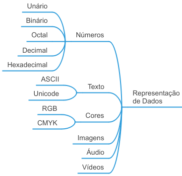
E por que é importante entender a representação de dados? Pensando no modelo geral de computação que estudamos na Parte 1 desta unidade, temos que fazer a entrada (input) dos dados em um computador, que processará esses dados através de um algoritmo, e a saída (output) apresentada pelo computador será a solução de nosso problema.
A pergunta óbvia aqui então é: “como fazer a entrada dos dados no computador?” Não basta apenas dizer “pelo teclado”. Nós precisamos entender em detalhes como os dados são representados pois, dependendo da representação que utilizarmos, podemos ter maior ou menor flexibilidade e facilidade na resolução dos problemas. Também não somos obrigados a utilizar a mesma representação no input e no output e, assim, temos que ser capazes de escolher a melhor representação possível para cada caso.
Para que a importância da representação do problema fique mais clara, imagine o seguinte: temos um problema simples para resolver, fazer a contagem de objetivos utilizando os dedos de uma mão. Nós podemos escolher representar essa contagem através do Sistema Unário, que contém apenas um único algarismo, o \(1\). Utilizando essa representação para os dados, quantos objetos podemos contar com os dedos de uma única mão? Obviamente \(5\) objetos. É possível contar mais do que cinco objetos com uma mão? Se continuarmos representando a contagem de objetos com o sistema unário, não. Mas, se mudarmos a representação da contagem dos objetos, podemos aumentar nossa capacidade de contagem! Se utilizarmos o Sistema Binário, que contém dois algarismos, o \(0\) e o \(1\), quantos objetos podemos contar com os dedos de uma mão? Surpreendentemente podemos contar \(32\) objetos, do objeto número \(0\) até o objeto número \(31\). Percebe por que a representação dos dados é importante? Se eu encontrar uma representação melhor para os dados, eu tenho maior flexibilidade, mais capacidade e facilidade de resolver problemas.
Saber qual é a melhor representação de dados para cada problema é fundamental na ciência da computação. Na maioria das vezes é mais fácil achar uma representação melhor do que tentar criar um algoritmo complexo para uma representação ruim.
Como curiosidade, se utilizarmos o sistema binário, quantos objetos podemos contar utilizando duas mãos (dez dedos)? Por incrível que pareça, podemos contar \(1024\) objetos, do objeto número \(0\) até o objeto número \(1023\). Compare isso com o sistema unário:
- Representar a contagem com o sistema unário: \(10\) objetos
- Representar a contagem com o sistema binário: \(1024\) objetos
Só de alterarmos a representação dos dados tivemos um ganho de \(10.140\%\) em nossa capacidade de contagem! Em resumo:
Ao encontrarmos uma representação mais adequada para os dados de nosso problema:
- Podemos fazer mais com menos
- Podemos utilizar algoritmos mais simples e adequados
- Temos maior flexibilidade na entrada e na saída
- Melhoramos nossa capacidade de resolução de problemas
Representação de números
Noção intuitiva dos sistemas numéricos
O Sistema Unário é aquele que só tem um único algarismo, o \(1\). Infelizmente, para nossos propósitos, é um sistema muito limitado e, por isso, praticamente não é utilizado na computação e não será mais nosso objeto de estudo.
Já o Sistema Binário, que possui dois algarismos, o \(0\) e o \(1\), é o sistema mais importante na computação pois os computadores somente “falam a linguagem binária”. Mas como esse sistema funciona? Intuitivamente o sistema binário funciona como se fosse o hodômetro de um carro. Como funciona o hodômetro de um carro? Veja a figura abaixo:
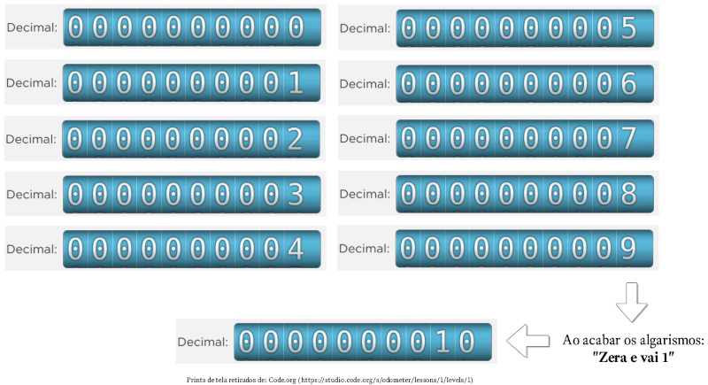
Cada “anel” do hodômetro de um carro tem gravado os dez algarismos, de 0 até 9, e a marcação da quilometragem percorrida é feita girando o anel. Quando o carro começa a andar, o anel mais à direita começa a girar, saindo do 0, passando para o 1, para o 2, e assim sucessivamente, até marcar 9 km. Quando o carro percorre o próximo quilômetro ocorre uma coisa fundamental no hodômetro: toda vez que um anel esgota os algarismos ocorre um processo de zera e vai 1. Repare que ao sair de 9 para 10 quilômetros, o anel mais à direita “zerou” e ocorreu um “vai 1” para o segundo anel, que passou a marcar “1”. Esse processo de zera e vai 1 é fundamental para entender o hodômetro. Veja como ocorre o processo de zera e vai 1 em outras quilometragens:
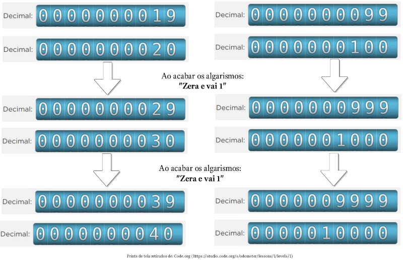
O funcionamento do sistema binário funciona exatamente da mesma forma que o hodômetro decimal, mas agora só temos dois algarismos. Imagine que você tem um carro com um hodômetro especial, um “hodômetro binário”. Veja como esse hodômetro binário funciona:
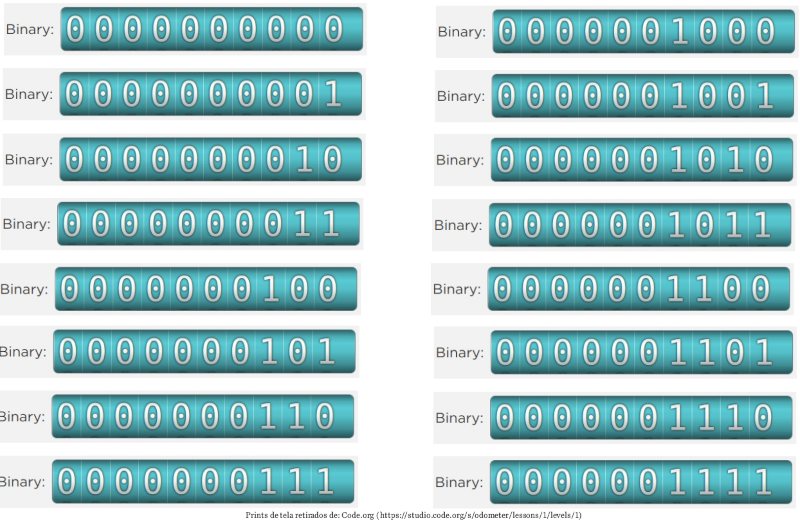
Perceba que o funcionamento do hodômetro binário é exatamente o mesmo do hodômetro decimal, ou seja, toda vez que os algarismo de um anel se esgotam, ocorre o processo de zera e vai 1. A diferença é que agora só temos dois algarismos, \(0\) e \(1\), e assim o processo de zerar ocorre mais vezes. O pequeno vídeo abaixo compara os hodômetros decimal e binário, de 0 até 31:
Se o hodômetro tem 10 algarismos binários, então podemos representar \(2^{10} = 1024\) números, de \(0\) até \(1023\). Assim, o maior número binário com 10 algarismos é o \(1111111111\), que corresponde ao decimal \(1023\).
Outra maneira de entender o funcionamento do sistema binário é utilizar várias lâmpadas, com a seguinte convenção: se a lâmpada estiver desligada, estará representando o algarismo \(0\); se a lâmpada estiver ligada, estará representando o algarismo \(1\). Se utilizarmos 5 lâmpadas, então poderemos representar \(2^5 = 32\) números, do \(0\) até o \(31\). Alguns exemplos estão nas figuras abaixo.
Se todas as lâmpadas estão apagadas, representam o número 0:
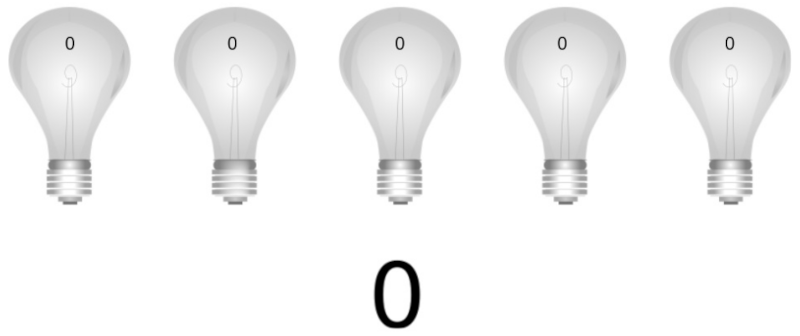
Se a primeira e a terceira (da direita para esquerda) estão acessas, estão representando o número 5:
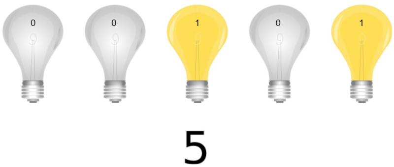
Se a primeira, terceira e quarta (da direita para esquerda) estão acessas, estão representando o número 13:
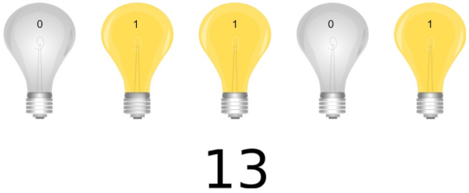
Se a primeira, segunda e quinta (da direita para esquerda) estão acessas, estão representando o número 19:
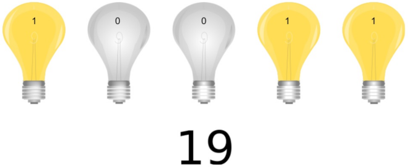
Se a segunda, quarta e quinta (da direita para esquerda) estão acesas, estão representando o número 26:
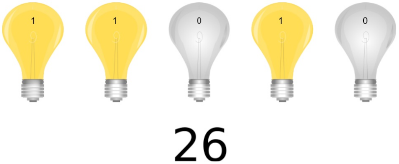
E se todas estão acessas, estão representando o número 31:
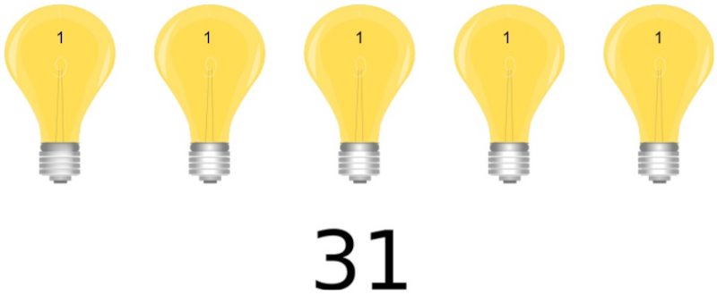
Para saber quantos números é possível representar com \(n\) dígitos binários, basta calcular \(2^n\). Desse total calculado, a faixa numérica vai de \(0\) até \(n - 1\). Por exemplo: com 13 dígitos binários podemos representar \(2^{13} = 8.192\) números, do \(0\) até \(8.191\).
Cada dígito binário é chamado de bit, de binary digit.
Por que os computadores “falam” binário?
Por conveniência e confiabilidade! É mais fácil projetar circuitos eletrônicos que representam apenas dois algarismos do que circuitos eletrônicos que representam dez algarismos. Além disso a representação com dois algarismos é perfeita para um dispositivo que utiliza eletricidade: se um circuito está com eletricidade, representa o algarismo \(1\); se um circuito está sem eletricidade, representa o algarismo \(0\).
A idéia de utilizar o sistema binário nos computadores partiu do matemático húngaro John von Neumann que, em 30/06/1945, publicou um documento intitulado “First Draft of a Report on the EDVAC” que sugeria o uso do binário nos computadores. Na época os computadores utilizavam válvulas a vácuo que alternavam entre dois estados: permitir ou impedir a passagem de eletricidade.
Atualmente os \(0\)s e os \(1\)s são “fabricados” nos computadores por um componente eletrônico chamado de transístor. O transístor é um dispositivo que permite ou não a passagem de eletricidade. Quando o transístor está transmitindo eletricidade, representa o algarismo \(1\); quando o transístor está interrompendo a passagem de eletricidade, representa o algarismo \(0\).
Note o seguinte agora: os \(0\)s e \(1\)s são uma abstração, ou seja, os computadores não entendem o algarismo zero ou o algarismo um. Nós é que consideramos que um transístor que está permitindo a passagem de eletricidade está representando o algarismo \(1\), e nós é que consideramos que um transístor que não está transmitindo eletricidade está representando o algarismo \(0\).
E não são apenas os transístores que podem ser utilizados para representar os algarismo binários. Em tese, qualquer dispositivo eletrônico que tenha dois estados pode ser utilizados, por exemplo:
- Transístor: utiliza eletricidade para representar os algarismos binários;
- CD-ROM: utiliza sulcos na superfície para representar os algarismos binários;
- Cartão perfurado: utiliza furos na superfície para representar os algarismos binários;
- Memórias antigas que utilizavam núcleos magnéticos de ferrite: utilizavam a direção do campo magnético para representar os algarismos binários;
- Hard Disk (HD): utiliza direção do campo magnético para representar os algarismo binários;
- Memórias atuais: utilizam transístores (eletricidade) para representar os algarismos binários; e
- Fibra óptica: utiliza luz para representar os algarismos binários.
Qualquer dispositivo bi-estável (com dois estados) pode ser utilizado para representar os algarismos binários, desde que: a) os estados sejam claramente distintos entre si; b) os estados possam ser lidos; e c) os estados possam ser alternados de acordo com nossa necessidade.
Formalização dos sistemas numéricos
Agora que você já entendeu a noção intuitiva do sistema binário e já sabe porque os computadores utilizam esse sistema, precisamos avançar para formalizar de modo mais matemático a noção de sistema numérico. Para essa formalização os seguintes conceitos matemáticos serão necessários:
- Base de um sistema numérico
- Valor posicional de um algarismo
- Decomposição numérica
Faremos essa formalização para os sistemas decimal, binário, octal e hexadecimal, nessa ordem, para facilitar o entendimento.
Sistema decimal
Para formalizar o sistema numérico decimal vamos, em primeiro lugar, lembrar o que é a base de um sistema numérico:
A base de um sistema numérico é a quantidade de algarismos utilizados para representar os números.
Assim, no sistema decimal, a base é \(10\), pois temos dez algarismos (0, 1, 2, 3, 4, 5, 6, 7, 8 e 9).
A segunda coisa que precisamos nos lembrar é do valor posicional de um algarismo. Por exemplo: no número \(5555\) temos quatro algarismos “5”, mas cada algarismo tem um valor diferente, dependendo da posição que o algarismo ocupa no número.
No sistema decimal o valor posicional de um algarismo é dado por \(n_i \times 10^i\), onde:
- \(n\) é o algarismo considerado;
- \(i\) é a posição do algarismo no número, sendo que a posição é contada da direita para a esquerda e sempre inicia em zero; e
- \(n_i\) é o algarismo na posição \(i\).
Tomo como exemplo o número \(347\). O algarismo \(7\) está na posição 0, então seu valor posicional é de \(7 \times 10^0 = 7\); o algarismo \(4\) está na posição 1, então seu valor posicional é de \(4 \times 10^1 = 40\); e o algarismo \(3\) está na posição 2, então seu valor posicional é de \(3 \times 10^2 = 300\):
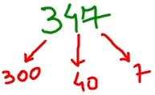
A decomposição numérica do número \(347\) é, então:
O número \(5555\) é formado por algarismos idênticos, mas cada um deles tem um valor posicional diferente:
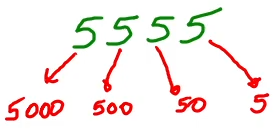
A decomposição numérica do número \(5555\) é, então:
De modo geral, a decomposição numérica no sistema decimal é dada por (lembre-se de que a posição \(i\) de um algarismo é contada da direita para esquerda, iniciando em 0):
Um exemplo de “quadro de valor posicional” do sistema decimal é mostrado abaixo:
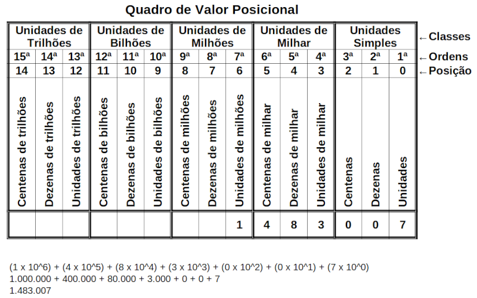
Sistema binário
O mesmo raciocínio que utilizamos para o sistema decimal (base, valor posicional e decomposição numérica) se aplica ao sistema binário. Assim, a base do sistema binário é \(2\), pois temos dois algarismos para representar os números (0 e 1).
O valor posicional de um algarismo binário é dado por \(n_i \times 2^i\), onde:
- \(n\) é o algarismo considerado;
- \(i\) é a posição do algarismo no número, sendo que a posição é contada da direita para a esquerda e sempre inicia em zero; e
- \(n_i\) é o algarismo na posição \(i\).
Considere, como exemplo, o número binário \(10011\). Para sabermos quanto vale esse número, basta fazer a decomposição e verificar o valor posicional de cada algarismo:
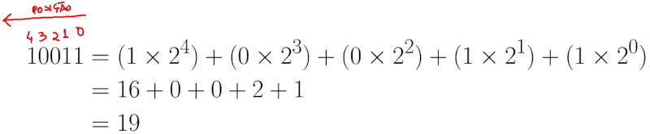
De modo geral, a decomposição numérica no sistema binário é dada por (lembre-se de que a posição \(i\) de um algarismo é contada da direita para esquerda, iniciando em 0):
Um exemplo de “quadro de valor posicional” do sistema binário é mostrado abaixo:
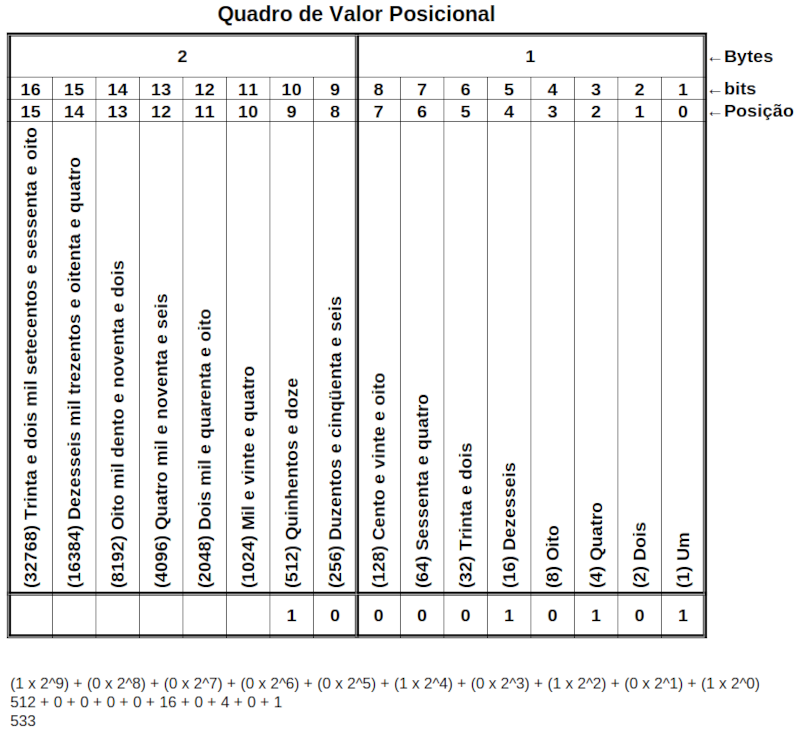
Podemos usar os valores das casas binárias como um “macete” para descobrir rapidamente o valor decimal de um número binário. Ao invés de fazermos a decomposição com as posições, escrevemos sobre cada número binário o valor de sua casa, e somamos os valores das casas que correspondem à algarismos “1”, por exemplo:
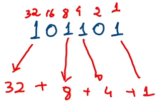
Quando estamos comparando números entre diferentes sistemas, ou quando queremos indicar o sistema numérico que estamos trabalhando, colocamos a base do sistema em subscrito, à direita do número. Isso indicará claramente em qual base o número está. A base pode ser indicada diretamente ou entre parênteses, por exemplo:
\[10011_{(2)} = 19_{(10)}\] \[101101_{2} = 45_{10}\] \[1000010101_{(2)} = 533_{(10)}\]Sistema octal
O sistema numérico octal é pouco utilizado hoje em dia, mas ainda é encontrado esporadicamente. A base do sistema octal é \(8\), pois tem oito algarismos para representar os números (0, 1, 2, 3, 4, 5, 6 e 7).
O valor posicional de um algarismo octal é dado por \(n_i \times 8^i\), onde:
- \(n\) é o algarismo considerado;
- \(i\) é a posição do algarismo no número, sendo que a posição é contada da direita para a esquerda e sempre inicia em zero; e
- \(n_i\) é o algarismo na posição \(i\).
Considere, como exemplo, o número octal \(17034\). Para sabermos quanto vale esse número, basta fazer a decomposição e verificar o valor posicional de cada algarismo:
Assim, podemos dizer que:
\[17.034_8 = 7.708_{10}\]De modo geral, a decomposição numérica no sistema octal é dada por (lembre-se de que a posição \(i\) de um algarismo é contada da direita para esquerda, iniciando em 0):
Um exemplo de “quadro de valor posicional” do sistema octal é mostrado abaixo:
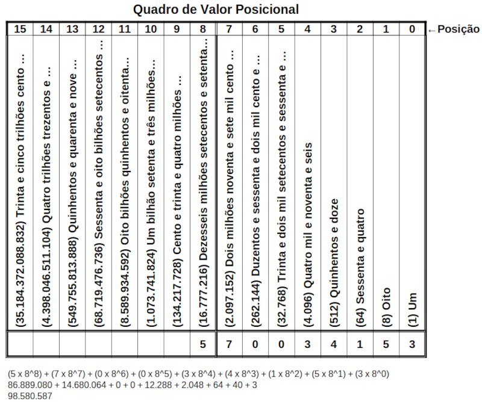
Sistema hexadecimal
O sistema hexadecimal é muito, muito utilizado na computação, pois é mais fácil representar grandes números utilizando o sistema hexadecimal do que utilizando o sistema binário. Como o uso do sistema hexadecimal é difundido e geral na computação, você deve ter familiaridade com esse sistema.
A base do sistema hexadecimal é \(16\), ou seja, temos dezesseis algarismos para representar os números: 0, 1, 2, 3, 4, 5, 6, 7, 8, 9, A, B, C, D, E, F. É muito importante que você entenda que no sistema hexadecimal as letras de A até F não são letras, são apenas algarismos que representam os valores de 10 até 15. O quadro abaixo mostra a relação entre os algarismos hexadecimais, decimais e binários. É extremamente importante que você memorize esse quadro (com o tempo):
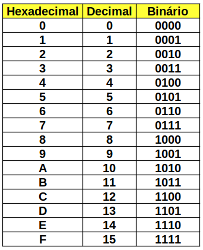
O valor posicional de um algarismo hexadecimal é dado por \(n_i \times 16^i\), onde:
- \(n\) é o algarismo considerado;
- \(i\) é a posição do algarismo no número, sendo que a posição é contada da direita para a esquerda e sempre inicia em zero; e
- \(n_i\) é o algarismo na posição \(i\).
Considere, como exemplo, o número hexadecimal \(F90B4\). Para sabermos quanto vale esse número, basta fazer a decomposição e verificar o valor posicional de cada algarismo:
Assim, podemos dizer que:
\[F90B4_{16} = 1.020.084_{10}\]De modo geral, a decomposição numérica no sistema hexadecimal é dada por (lembre-se de que a posição \(i\) de um algarismo é contada da direita para esquerda, iniciando em 0):
Um exemplo de “quadro de valor posicional” do sistema octal é mostrado abaixo:
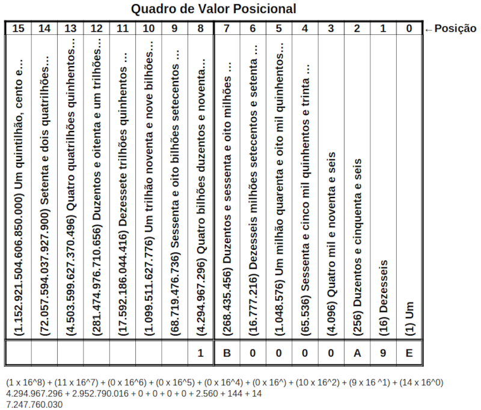
Generalização para outros sistemas
O valor de um algarismo em um sistema numérico de base \(b\) é dado por \(n_i \times b^i\). A decomposição numérica é dada por:
Unidades de medida decimal
As seguintes unidades de grandezas de base 10, maiores do que a unidade, padronizadas pelo Sistema Internacional de Unidades, são:
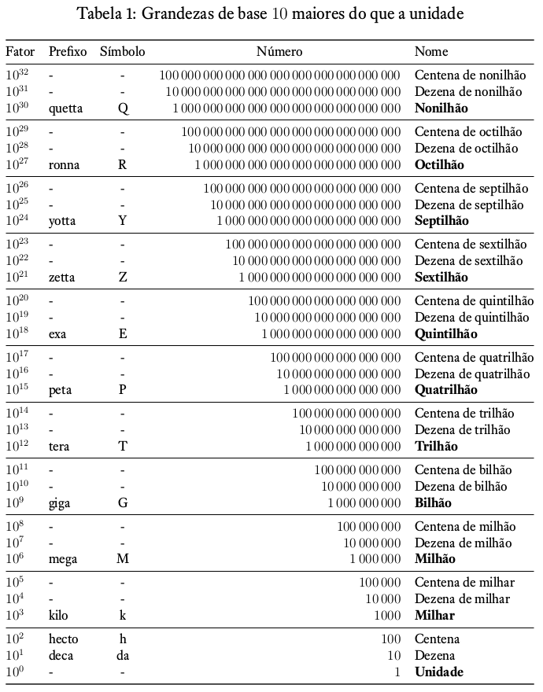
As seguintes unidades de grandezas de base 10, menores do que a unidade, padronizadas pelo Sistema Internacional de Unidades, são:
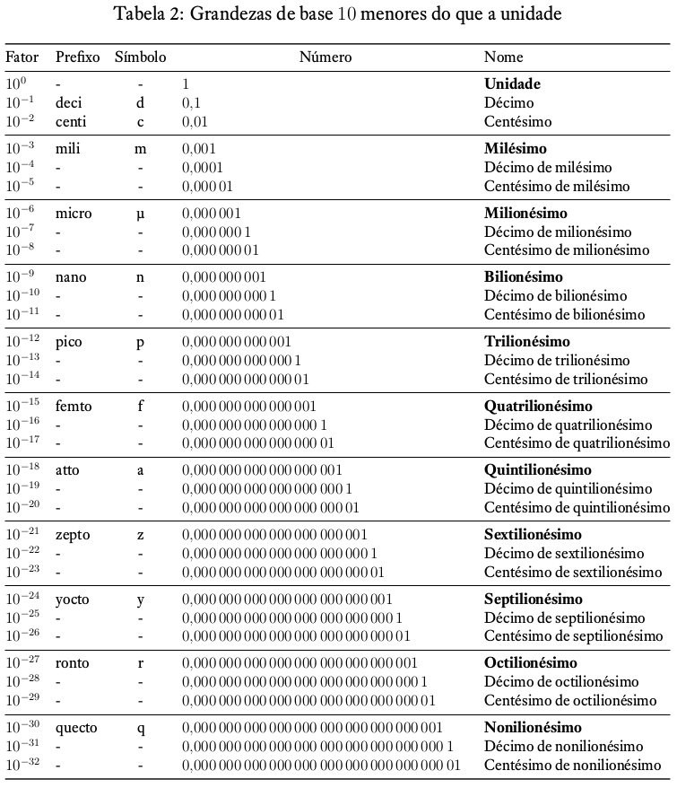
Resumo das unidades:
Unidades de medida binária
As unidades de medida no sistema binário, levam em consideração que:
- bit (b): um algarismo binário (0 ou 1)
- nibble: um conjunto de 4 bits
- Byte (B): um conjunto de 8 bits
O Byte (B) é a unidade fundamental de medida na computação pois armazena, em geral, 1 caractere. Não se esqueça que \(1\,\text{B} = 8\,\text{b}\), ou seja, 1 Byte corresponde a 8 bits.
As unidades binárias padronizadas são:
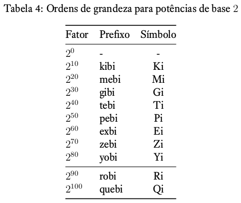
Comparação entre medidas decimais e binárias
Os prefixos e símbolos das unidades decimais e binárias são diferentes pois as unidades não correspondem exatamente entre si. As unidades binárias são sempre maiores do que as unidades decimais:
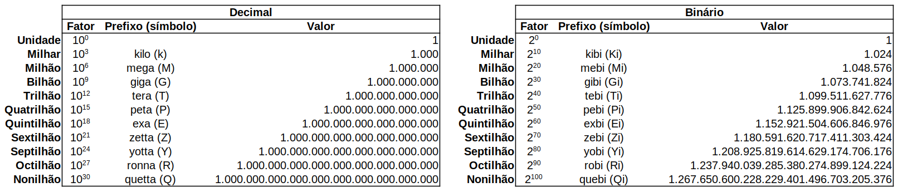
Representação de textos
Como podemos representar textos no computador? Se os computadores só entendem números binários, como podemos representar um texto como “Oi!”? É necessário fazer um mapeamento entre as letras e os números binários. Esse mapeamento é chamado de encoding.
Encoding é o processo de mapear os caracteres em números binários, permitindo então que os caracteres sejam armazenados, transmitidos e processados por computadores.
Um encoding clássico é o Código Morse, que faz o mapeamento das letras e demais caracteres em pontos e traços. Através desse mapeamento foi possível transmitir mensagens em longas distâncias utilizando-se um telégrafo.
ASCII: American Standard Code for Information Interchange
O ASCII foi um dos primeiros encodings padronizados para mapear caracteres e números binários. Originalmente o ASCII utilizava 7 bits para representar os caracteres, significando que poderíamos mapear \(2^7 = 128\) caracteres, na faixa de \(0\) até \(127\). A tabela de mapeamento ASCII original está a seguir:
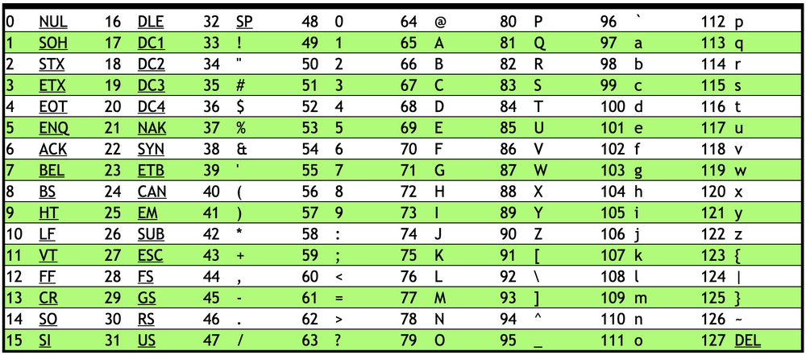
O ASCII tem duas características principais:
- É um encoding direto, ou seja, cada letra é mapeada diretamente para uma seqüência binária específica, por exemplo: A = 1000001; e
- É um encoding de tamanho fixo, ou seja, cada caractere é mapeado com 7 bits.
Como o ASCII pode mapear apenas 128 caracteres diversos caracteres não têm representação como, por exemplo, as letras acentuadas.
Para incluir mais alguns caracteres foi criado o Extended ASCII, que passou a utilizar 8 bits para mapear os caracteres. Agora o ASCII poderia mapear \(2^8 = 256\) caracteres, na faixa de \(0\) até \(255\). A tabela Extended ASCII está a seguir:
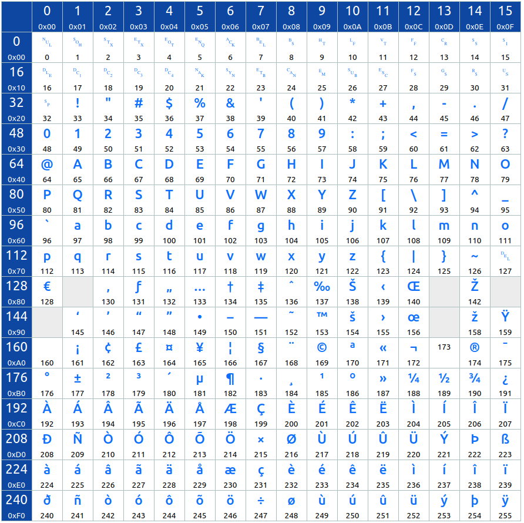
Clique aqui para fazer o download de um PDF com a tabela ASCII detalhada
Entretanto, mesmo com 256 caracteres mapeados, a maioria dos sistemas de escrita utilizados no mundo não tem representação no ASCII: caracteres cirílicos, chineses, hieróglifos egípcios, sânscrito e muitos outros. Para superar as limitações do ASCII foi criado o padrão Unicode.
Unicode
(em breve)
Representação de cores
(em breve)
Representação de imagens
(em breve)
Representação de áudio
(em breve)
Representação de vídeo
(em breve)
Diferenciação entre os padrões binários
(em breve)
Anexos: conteúdo adicional sobre representação de números
Este anexo contém vídeos com conteúdo adicional a respeito da representação de números, incluindo:
- Conversão entre bases numéricas
- Outros conceitos fundamentais sobre representação de dados numéricos
- Representação de números negativos em binário
- Representação de números fracionários em binário
- BCD e expansão do sinal
A duração dos vídeos nesses anexos variam entre 1 e 6 horas de duração, portanto você não deve assistir todos os vídeos de uma única vez. Crie um roteiro de estudos para assistir pequenas partes de cada vez, mas assista a todos os vídeos (esse conhecimento será útil!).
Conversão entre bases numéricas
Outros conceitos fundamentais sobre representação de dados numéricos
Representação de números negativos em binário
Representação de números fracionários em binário
BCD e expansão do sinal
PARTE 3: algoritmos
Download do “Símbolos em Fluxogramas: Guia Simplificado”
(em breve)
PARTE 4: pensamento computacional
(em breve)
PARTE 5: abstração
(em breve)